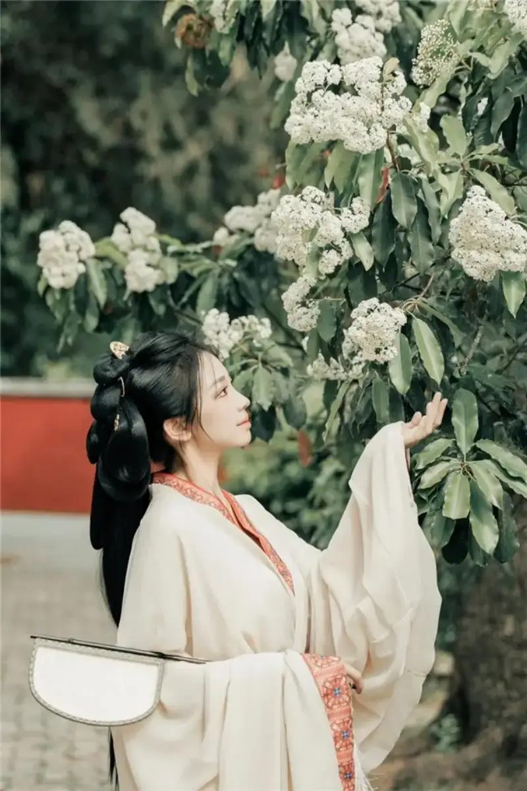
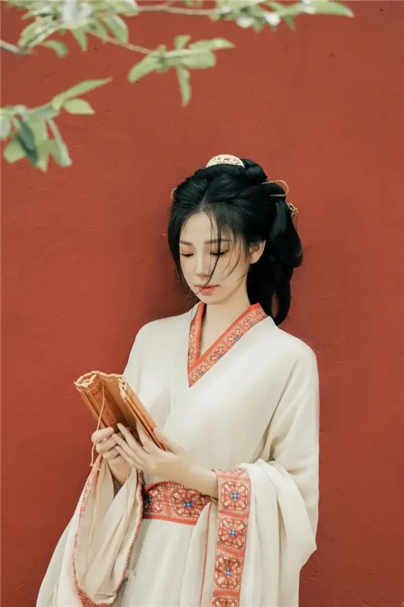

Published: 2024-05-14
Source link: https://www.cnphotos.net/academy/show-172.html
Tai'an means a peaceful country and a safe people. It is a prefecture-level city in Shandong Province. The city sits at the foot of Mount Tai and is built along the mountain, so the city and the mountain are one. It is also an important open cultural tourism city in East China. When you come to a city so rich in culture, you will want to take lovely check-in photos. Here I have gathered some tips and spots for great photos. Use them when you visit Tai'an, and shoot the same shots!
First is the Puzhao Temple in Tai'an. This old temple of red walls, dark tiles, green bamboo, and yellow flowers is perfect for classical-style photos, such as the very popular Warring States robe. In this old temple, a long lens like the RF 70-200mm F2.8 gives a strong mood. A long lens narrows the view, so it simplifies the background and makes the subject stand out. The camera is the EOS R6 Mark II. Canon color needs no words. It is rich, fine, and layered. When you shoot portraits, the eye-detection focus and tracking lock onto the model's face, so even beginners get good shots easily.

The wide aperture of the RF 70-200mm F2.8, paired with the mid-telephoto range, also gives a beautiful blur. When you shoot the Warring States robe, it fills the whole photo with mood at once!
Also, when you shoot, beyond places with trees, flowers, and bamboo, you can simply find a red wall. You can still shoot a clean, vivid photo.

Of course, if posing a model always gives you a headache, let the model turn around and relax. Then the eye tracking and burst mode of the EOS R6 Mark II, paired with the fast, precise focus of the RF 70-200mm F2.8, catches photos where the model's expression and look feel natural and lovely.
Beyond the Puzhao Temple, there are many more check-in spots. I have gathered them here. When you go, you can use the same techniques from the Puzhao Temple above. You will get lovely photos too.
1. Daimiao Fuquan Road
Here you will find all kinds of snacks and food, and many Mount Tai cultural souvenirs. The roadside stalls sell classical-style fans, antiques, and handicrafts. You can use these as props for classical check-in photos. Along the way there are also many classical-style check-in points, with lanterns and festival lamps as decor. Photos come out great.
2Beixin Night Market
This is the oldest and liveliest night market in Tai'an. It has food, drink, and fun of all kinds. It is great for moody travel photos. When you shoot, use the stalls as a foreground or background. Catch the most natural, lovely photos as you enjoy the market.
At all the check-in spots above, the EOS R6 Mark II with the RF 70-200mm F2.8 works well. It suits travel check-in shots and portraits. I hope you get lovely check-in photos too.